In this project, we built on our 3D renderer that utilizes ray tracing from Project 3-1 to improve its functionality. Our implementation now allows our renderer to handle complicated materials (microfacet materials like copper, gold, and silver) and depth of field effects.
Things we didn’t take into account/problems encountered and solved:
Originally, our dragon was coming out completely washed out and white. After debugging our F, G, and D outputs, we found it was a problem with our D(h). Upon closer inspection, we found that we forgot a negative in our NDF calculation. After fixing that, the dragon was rendering much better, but was still too dark. We limited the problem down to sample_f using the default cosine implementation. We found that when we were computing the pϕ(ϕh) pdf, we didn’t place our parentheses correctly. After fixing that, we got a correct looking render, but there were too many balck dots. We moved our wo and wi valid checks into f while adding an additional validation check for just wi in sample_f, and we were left with the correct solution.
Deliverables:
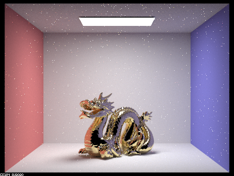 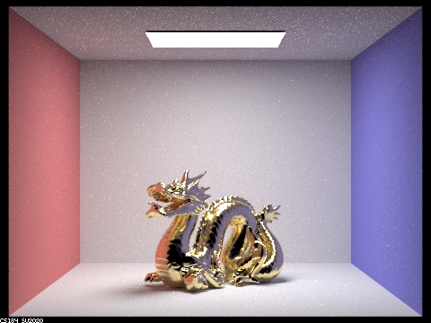 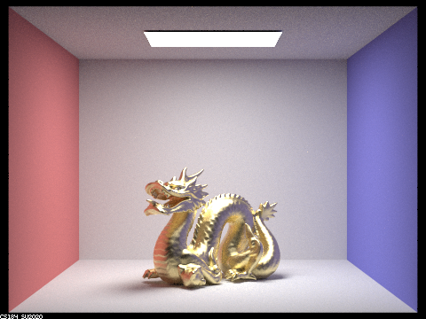 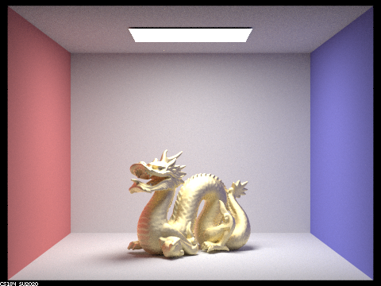As we increase the size of alpha, the white dot noise disappears and the gold texture on the dragon becomes brighter and more homogenous/blended smoother.
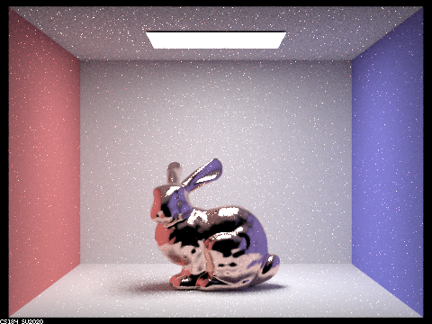 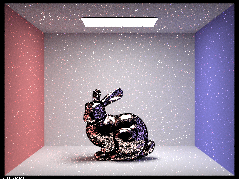Compared to our implementation, the image rendering using the cosine hemisphere sampling (default) method has a dark line along all the edges of the bunny, along with a large amount of black dot noise within the bunny. There also appears to be a little more white dot noise outside the bunny.
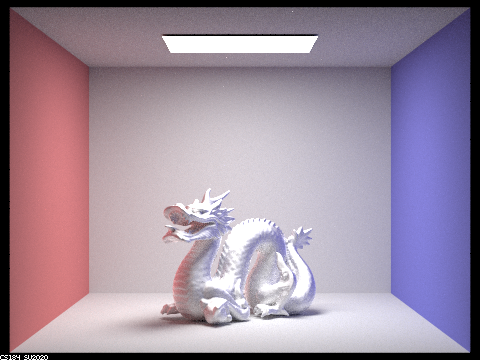Our new eta values are 0.059193, 0.059881, and 0.047366, and our new k values are 4.1283, 3.5892, and 2.8132. These values correspond to the conductor material Silver (Ag).
Things we didn’t take into account/problems encountered and solved:
We initially missed the addition of pos to the ray origin, leading to rendering problems. The calculation of pFocus was sidetracked by an initial attempt to explicitly calculate the intersection of the red segment of the figure and plane of focus.
A pinhole camera takes in light regardless of distance, and generates a "virtual" image behind the pinhole point. A thin-lens camera augments light passing through it to a focal point where the image is captured. The thin-lens camera design allows for a high-resolution focus on specific areas as opposed to the pinhole camera's evenly distributed intake of light. Thin-lens cameras create a level of blur depending on the level of light intake, modified by the aperture size, and lets you change area of focus with focal distance. Pinhole cameras cannot adjust these properties dynamically.
Deliverables:
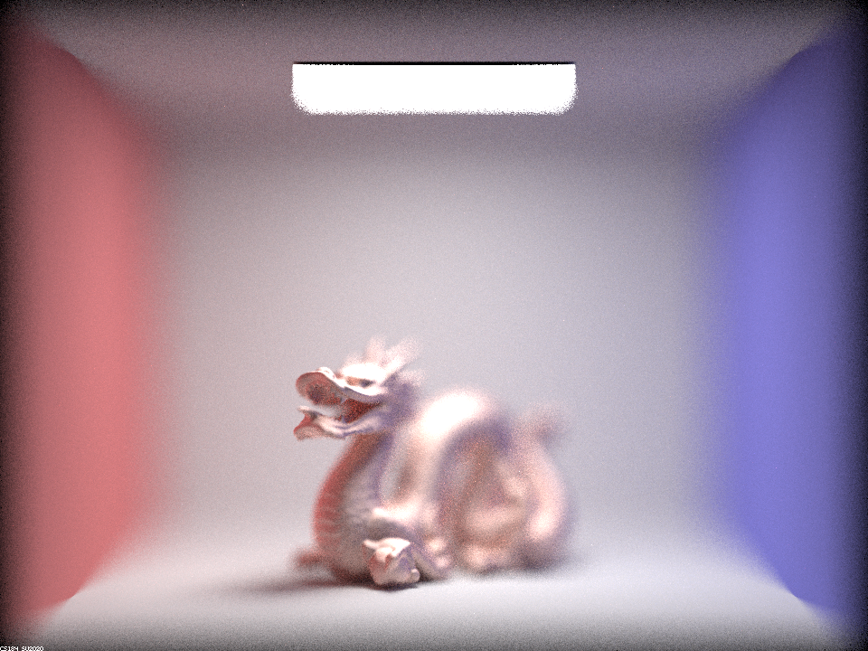 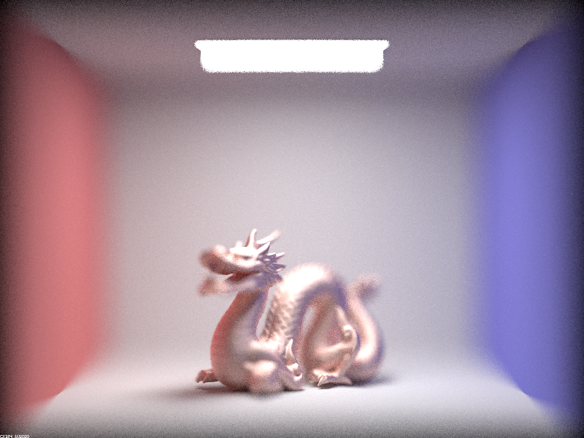 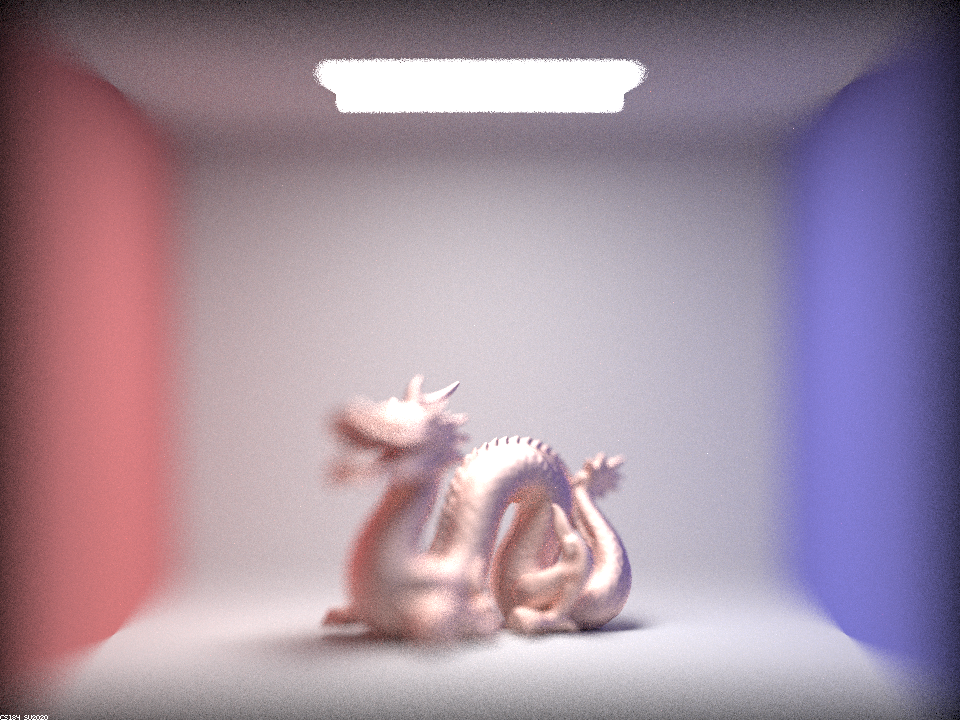 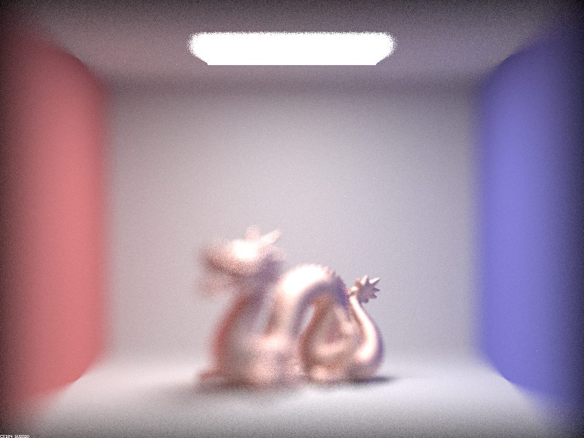Here is a focus stack of our dragon rendering with -b set to 0.5 and -d set at 4.56, 4.75, 4.94, and 5.13 respectively.
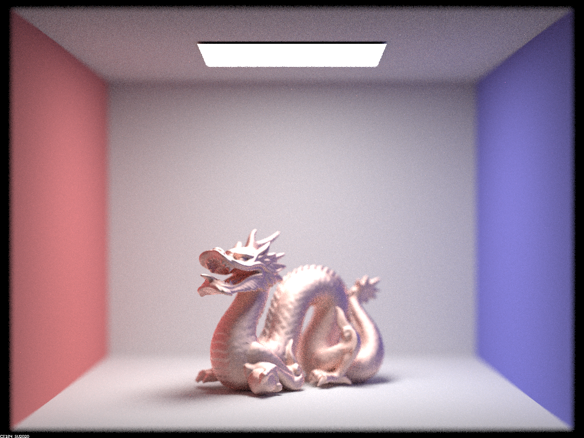 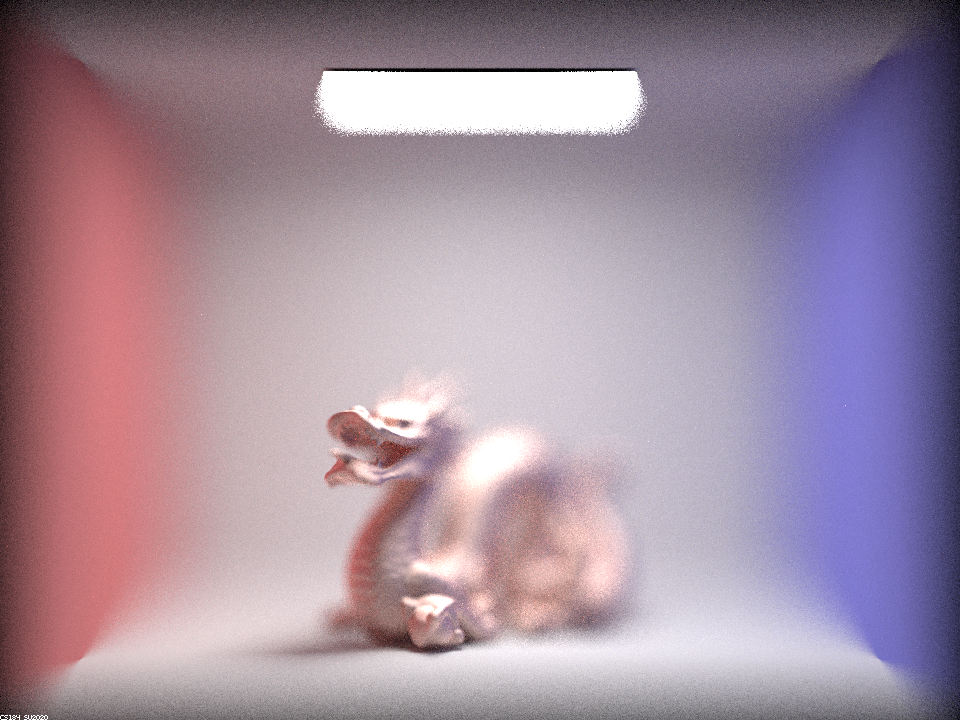Here, we have 4 different aperture sizes, with -b at 0.1, 0.3, 0.5, and 0.7, all focusing on the dragon's mouth and front paw.
As partners, we collaborated mostly in-person (Berkeley Way West, Project Parties) and occasionally remotely. Our collaboration itself went a lot smoother than the last project. We were able to get the help we needed in project parties from both the TA’s and our fellow students. We definitely benefited from starting the project earlier and attending as many OH’s/Project Parties as our schedules allowed this time, another lesson we learned from the last project. By doing this, along with planning what we’re going to be working on in advance each day, we feel we have found an effective strategy to finish projects efficiently.
Our webpage is at https://cal-cs184-student.github.io/sp22-project-webpages-Lukatastic/proj3-2/index.html